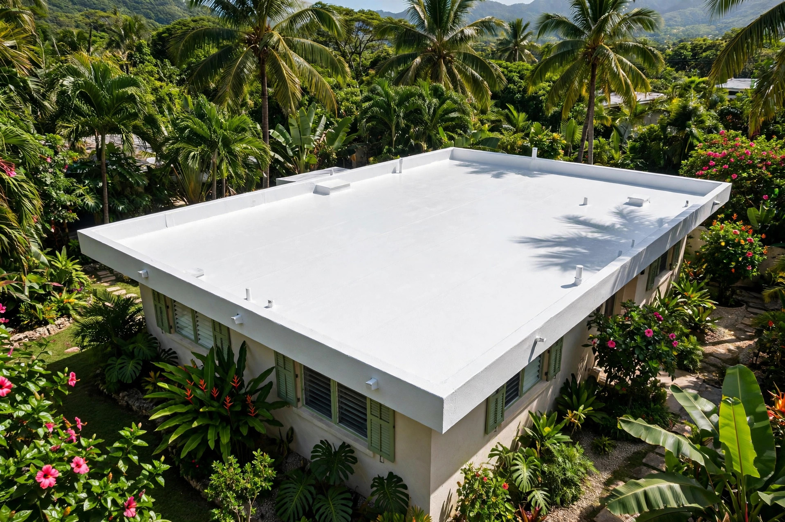
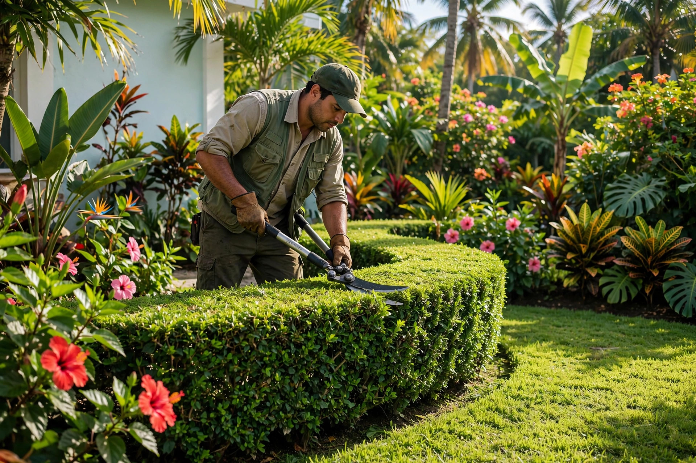
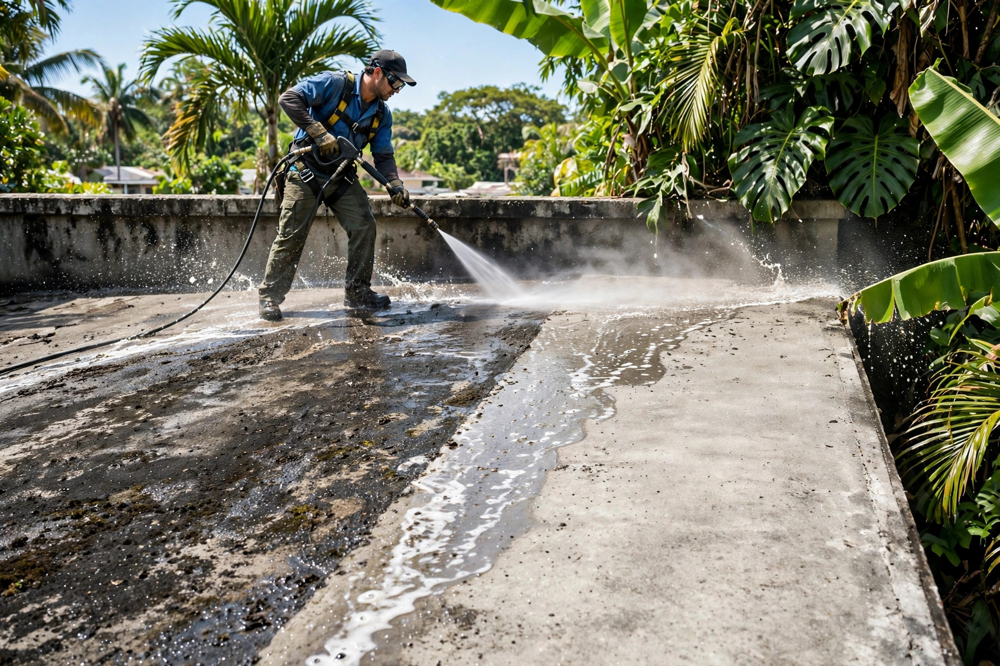
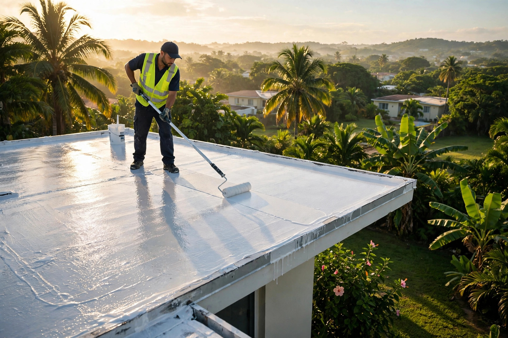

Corte’s Landscaping • Florida / Arecibo
Lavado y sellado de techos + mantenimiento de áreas verdes en el área norte. Estimados gratis.

Nuestro trabajo
El oficio en acción: aplicación, acabado y detalle profesional.



Servicios
Área norte: Quebradillas, Hatillo, Camuy, Arecibo, Barceloneta, Manatí y Vega Baja
Lavamos a presión y sellamos tu techo para una protección total contra filtraciones.
Cuidado periódico de patios y jardines para que siempre se vean impecables.
Corte de grama, recorte de setos y limpieza general de exteriores.
Visitamos tu propiedad y te damos tu estimado sin costo ni compromiso.
Cómo trabajamos
Visitamos tu propiedad, medimos el techo y detectamos filtraciones sin costo.
Te damos precio fijo y alcance claro del trabajo antes de empezar.
Limpieza a presión, reparación de grietas y preparación de superficie.
Aplicación del sistema de sellado con garantía escrita.
Preguntas frecuentes
Sí. Visitamos tu propiedad en el área norte y te damos tu estimado sin costo ni compromiso.
Florida, Arecibo y el área norte: Quebradillas, Hatillo, Camuy, Barceloneta, Manatí y Vega Baja.
Las dos cosas: lavado y sellado de techos, y mantenimiento de áreas verdes. Un solo equipo para tu casa completa.
Sí. La superficie tiene que estar limpia para que el sellador adhiera bien y el trabajo dure.
Depende del tamaño y del tipo de plantas. Te proponemos un plan de visitas según lo que necesite tu propiedad.
Cotización gratis
Completa los 3 pasos y te abrimos WhatsApp con tu solicitud lista para enviar.
Esta página la creó ManuPro. Escríbenos hoy mismo y cotiza la website profesional de tu negocio.
Cotizar por WhatsAppÁrea norte: Quebradillas, Hatillo, Camuy, Arecibo, Barceloneta, Manatí y Vega Baja · 787-321-8753
Cotizar ahora